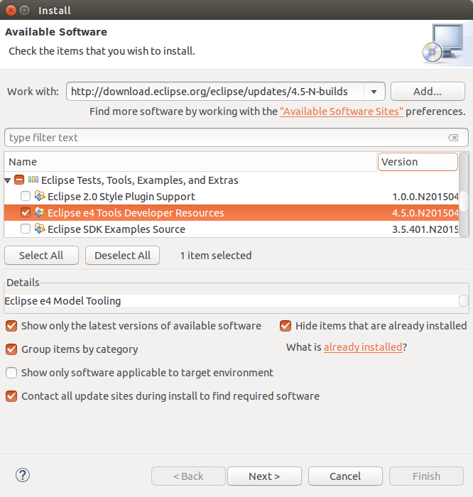
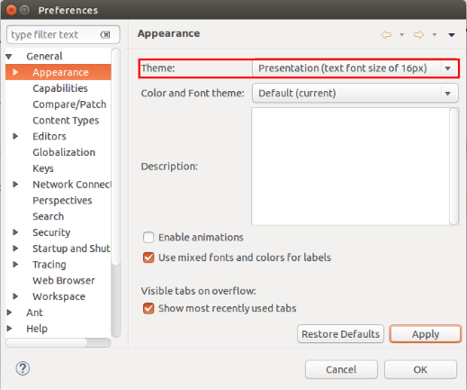
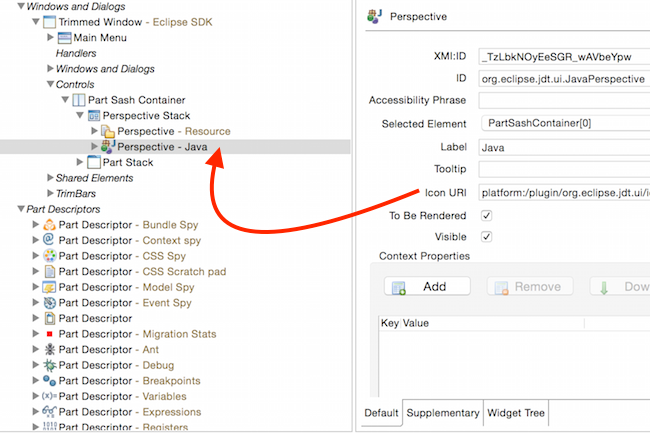
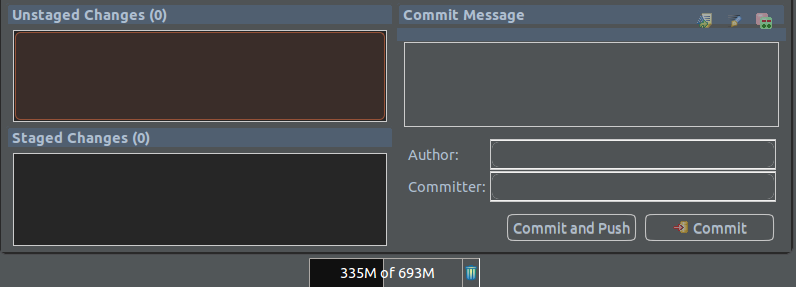
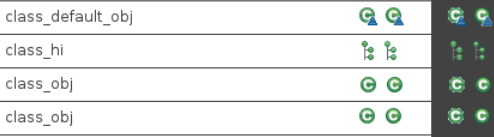
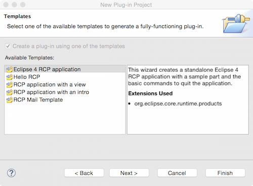

Use the XHTML Markup Validation Service.
Parts of the e4 tools have been integrated into the Eclipse platform project. Mainly the Eclipse 4 application model editor and related wizards are now directly available via the Eclipse update site. The e4 project wizard has been integrated into PDE, see the PDE section for more informations.

For more information see bug 459799 and related bugs.
The XPath expression uses JXPath internally, so it should reference attributes of the model object, not the XML file.
These 2 samples are equivalent:
parentElementId="MyMenu1, MyMenu2"
parentElementId="xpath://*[@elementId='MyMenu1' or @elementId='MyMenu2']"
This feature opens up the possibility to:
- Add a fragment to multiple places in a model
- Target a fragment to multiple application models
- Specify attributes (such as tags) as the target
A new "Presentation" theme is available in the preferences under General -> Appearance. The presentation theme increases the font size of text editors to 16px, so that code or other contents is better readable during presentations. If the Eclipse IDE is used during presentations or software conferences, the colors and font settings does not have to be looked up, but can be activated easily.

For more information see bug 459961 and bug 459578.
If an Icon URI is defined, it is now displayed in the model editor and in model spy:

For more information see bug 403583.
CSS support for Form based editors has been improved. The dark theme included in the Eclipse SDK take advantages of that as depicted in the following screenshot.

For more information see bug 465148.
The heap monitor has been extended to allow to set its background color and the dark theme uses that. The following screenshot show the heap monitor after the change.

For more information see bug 372517.
The 'Open With...' dialog has been improved: it has now search filter and allows to remember selected editor as default for the file name or type. The following screenshot shows the new dialog.

For more information see bug 378485, bug 460555 and bug 463262.
With the new Hierarchical view in the Project Explorer (see M5 news), it has become more frequent to have different workspace projects with overlapping resource trees. The Open Resource dialog has been enriched with a new option to allow hiding entries that reference the same underlying resource and show only the most relevant.





- Leverage knowledge that auto-boxing always produces a non-null value.
- Leverage knowledge that certain compiler-generated methods - like
valueOf()andvalues()on enum types - provide non-null values. - Various improvements in resource leak analysis.
TYPE_USE target).
In particular, working with external annotations benefits from this feature, as the Javadoc hover now shows these external annotations as well, thus providing the attached information right where it is needed. Also the Javadoc view is able to show the same information.
Javadoc hover after having applied the Annotate command for the return type of Map.get():

As of Eclipse 4.5, this feature is only enabled in projects that are configured for annotation-based null analysis.
It is now possible to create an E4 project using the plugin wizard. Select 'This plugin makes contribution to UI' and 'create a rich client application':

You will get a template to create an E4 project:

Then you can select to generate some content inside:

And you get your E4 project in your workspace:

For more information see bug 441331.
API Baselines can now be created from a target definition in the Plug-in Development > API Baselines preference page.